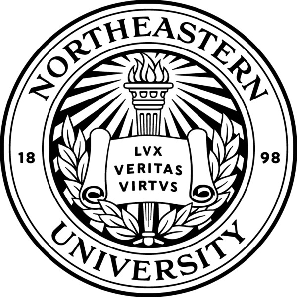

Yankai (Luke) Jiang

Ph.D student
Department of Electrical & Computer Engineering
Northeastern University College of Engineering
Office: 140 Fenway, Boston, MA 02115
Email: jiang [dot] yank [at] northeastern [dot] edu
Linkedin / Github / Twitter / Google Scholar
I am Yankai Jiang, a 3rd-year Computer Engineering PhD student at Northeastern University, advised by Prof. Devesh Tiwari. I'm part of the Goodwill Lab. My research focuses on cloud computing, sustainable computing and HPC.
Previously I obtained my M.S. in Computer Engineering from Northwestern University, advised by Prof. Peter Dinda and Prof. Xinyu Xing. Prior to that, I graduated from Xi'an Jiaotong University with B.E. in Automation. Also, I was a student from Special Class for the Gifted Young.
Publications
ThirstyFLOPS: Water Footprint Modeling and Analysis Toward Sustainable HPC Systems
Yankai Jiang, Raghavendra Kanakagiri, Rohan Basu Roy, Devesh Tiwari
International Conference for High Performance Computing, Networking, Storage and Analysis (SC), 2025.
[
paper
]
[
code
]
[
slides
]
[
video
]
ForgetMeNot: Understanding and Modeling the Impact of Forever Chemicals Toward Sustainable Large-Scale Computing
Rohan Basu Roy, Raghavendra Kanakagiri, Yankai Jiang, Devesh Tiwari
International Conference on Measurement and Modeling of Computer Systems (SIGMETRICS), 2025.
[
paper
]
[
code ]
[
slides
]
[
abstract
]
[
3min-video
]
Education
|
Northeastern University, Boston, MA, US Ph.D in Computer Engineering |
Sept. 2023 - Present |  |
|
Northwestern University, Evanston, IL, US M.Sc in Computer Engineering |
Sept. 2021 - Jun. 2023 |
|
|
Xi'an Jiaotong University, Xi'an, China B.E. in Automation |
Aug. 2016 - Jun. 2020 |
|
Teaching
CS340: Introduction to Computer Networking
Fall 2022, PM, Northwestern Universiy
CS340: Introduction to Computer Networking
Winter 2023, PM, Northwestern Universiy
Invited Talks
Carbon in Motion: A Case Study on Sustainability of Generative AI for Video Generation
2024 Green AI Summit
Services
Artifact Evaluator: FAST'26, EuroSys'26, SOSP'25, SIGCOMM'25, MICRO'25, ISCA'25
Reviewer: IJCAI'25 Demos, ACL'25 SRW, Environmental Science & Ecotechnology (ESE)
Travel Grants
2025 NSF Travel Award, attend PPoPP’25 Conference
2023, 2024, 2025 NSF Travel Award, Student Travel Award to attend MVAPICH User Group (MUG) Conference
MISC
I have a passion for hacking low-level systems and AI4Bio. Additionally, I love symphony, I'm a longtime subscriber to the CSO and BSO. 200+ concerts, happy to chat!